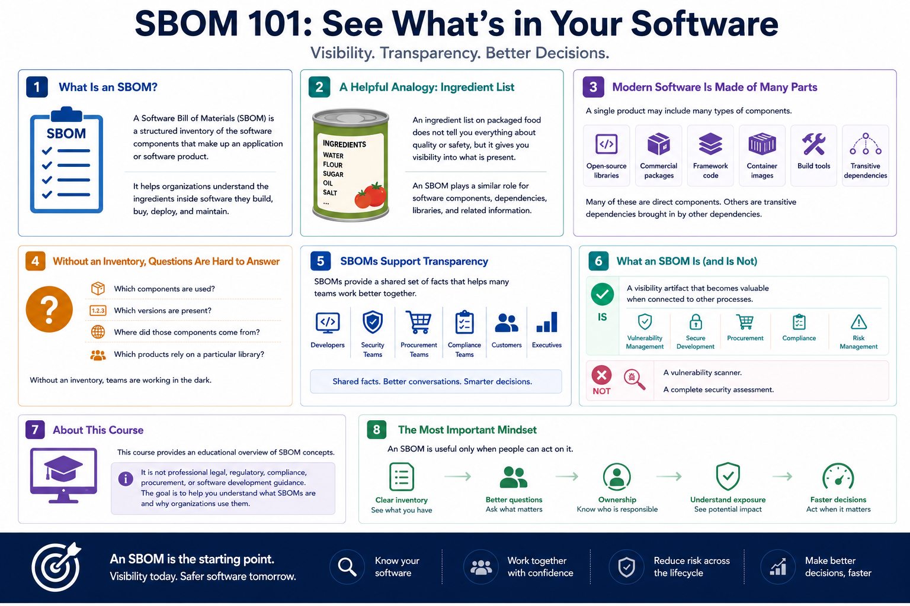

What Is SBOM?
Introduction to SBOM
Connecting to LMS... Progress: in progress
Version 1.0 | Date: 2026-06-16 | Educational overview of Software Bill of Materials concepts.

Narration
A Software Bill of Materials, or SBOM, is a structured inventory of the software components that make up an application or software product. It helps organizations understand the ingredients inside software they build, buy, deploy, and maintain.
A common comparison is an ingredient list on packaged food. The list does not tell you everything about quality or safety, but it gives you visibility into what is present. An SBOM plays a similar role for software components, dependencies, libraries, and related information.
Modern software is assembled from many parts. A single product may include open-source libraries, commercial packages, framework code, container images, build tools, and transitive dependencies brought in by other dependencies.
Without an inventory, teams may struggle to answer basic questions. Which components are used? Which versions are present? Where did those components come from? Which products rely on a particular library?
SBOMs support transparency. They help developers, security teams, procurement teams, compliance teams, customers, and executives discuss software supply chain risk using a shared set of facts.
An SBOM is not a vulnerability scanner and not a complete security assessment. It is a visibility artifact that becomes valuable when connected to vulnerability management, secure development, procurement, compliance, and risk management processes.
This course provides an educational overview of SBOM concepts. It is not professional legal, regulatory, compliance, procurement, or software development guidance. The goal is to help you understand what SBOMs are and why organizations use them.
The most important mindset is that an SBOM is useful only when people can act on it. A clear inventory helps teams ask better questions, assign ownership, understand exposure, and make faster decisions when software risk changes.